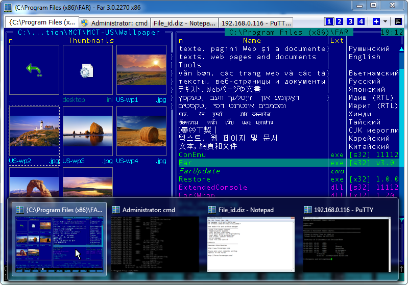
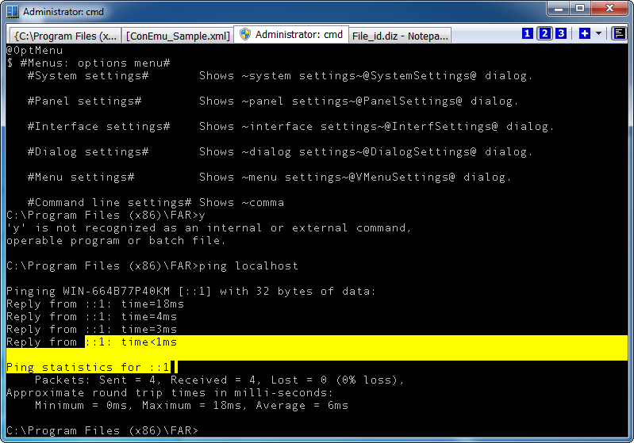
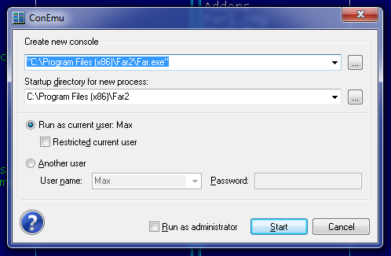
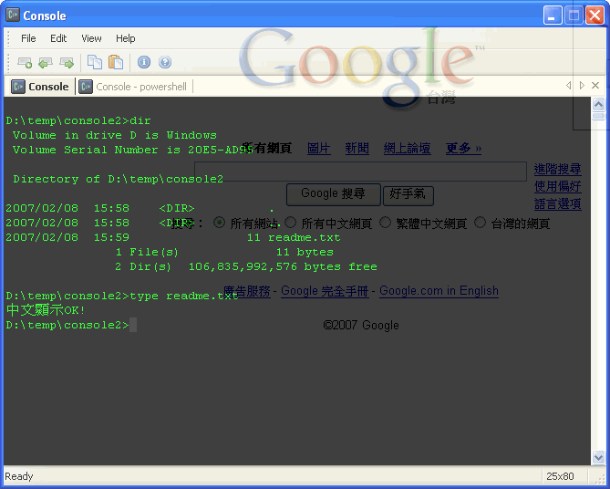
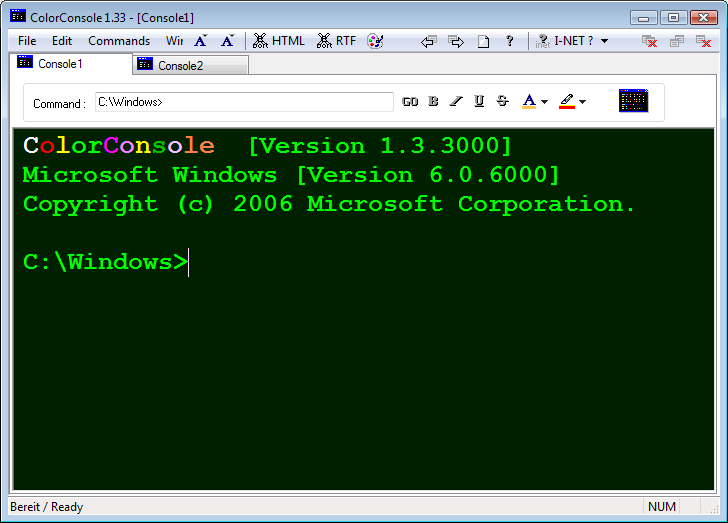
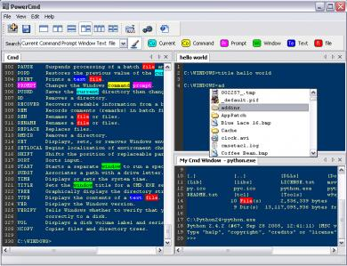

Created 星期二 26 六月 2012
Windows下的Console Emulater
对于一个Linux下用管了各种终端和各种shell的人来说，来到Windows实际时，最大的痛苦是那个蹩脚的cmd。虽然有Cygwin和Msys的mintty/rxvt，但它们还是更适合跑bash和它们自己的term类程序，不适合跑Windows的console程序（比如路径的斜线/反斜线问题，比如）
下面，我们分两方面来找找替代品，这次介绍Console Emulater，类似UNIX下终端仿真器(terminal emulator)那样的东西，让多个字符界面程序（比如cmd/bash/python shell）跑在一个窗口里，下次再介绍类似UNIX下shell那样的东西，切实改进cmd那可怜的交互能力。
推荐: ConEmu
http://code.google.com/p/conemu-maximus5
看看下面的特性列表，颤抖吧！
- 支持多标签，甚至支持将其它的GUI程序（不仅仅是console程序哦，比如
putty/记事本等都可以）嵌入为标签页; - 可以选择各种字体，且自带抗锯齿功能;
- 对各种console程序都兼容得很好（比如文件管理器Far Manager，win32版本的vim，比如IPython）;
- 支持Quake式的下拉风格（即类似于Guake/Tilda/Yakuake那样的，不用时窗口隐藏，需要时用热键呼出，界面从屏幕顶端拉下来）——这个需要最近的版本（至少2012-06-12之后的）;
- 增强的文字选取（比如缺省按住左Alt+鼠标拖动，可以选择矩形区域）
- 支持ANSI X3.64和xterm 256彩色
- 很多针对Far Manager文件管理器的增强，比如：让Far Manager支持Windows风格的文件拖放、右键菜单、分隔条，给Far Manager文件列表增加了缩略图和小图标浏览方式（Far Manager可是个基于字符的文件管理器），为查看器/编辑器自动提供新的标签页（即将Far Manager的screen实现为了它的标签页），
注意: 中文用户请使用2012-06-17之后的版本，因为这个版本刚修正了中文的显示问题（以前的版本会在命令行中出现每个汉字出现两遍的情况。这也是为什么以前我没有推荐这个好工具的主要原因）。


http://conemu-maximus5.googlecode.com/svn/files/ConEmuTextSelection2.png
{kind=link}
补充说明一下如何将其它程序变为ConEmu里面的标签页（参见其Wiki: LaunchNewTab）：

另一种方法是，在ConEmu里面跑一个cmd.exe，然后在cmd里面输入
putty -new_console，确定，哒哒！putty就变成ConEmu的一个标签页了; 输入: vim -new_console 然后vim就在一个新的标签页里面打开了! （是的，其实这里的-new_console并不是putty或者vim的参数，会被ConEmu拦截并进行处理。）- 注意得选用最近几天的版本，并在Settings->Features中勾选上Inject ComEmuHk。对于以前的版本，得这样：
"%ConEmuBaseDir%\ConEmuC.exe" /c vim.exe -new_console:nh0 c:\sources\1.cpp（详细解释可以参看其Wiki: NewConsole ） - 另外一个例子: 将grep的结果“重定向”到一个新的标签页：
grep-new_console-nHi --color path cmd_autorun.cmd而当前cmd并不阻塞，可以继续输入其它命令（缺省不想激活新标签页的话可以用-new_console:b)
其它备选
1 Console2
http://sourceforge.net/projects/console
Console2的功能就比较简单，主要是提供了多标签页，另外有一些小的功能（比如可以选择字体、可以半透明等）。
对各类Console程序兼容性比较好，cmd/python/bash/vim都可以正常运行。
不过按缺省的设置，在中文系统上使用时，会存在文字错行的问题，解决方法是将如下内容导入注册表
（注意拷贝到xxxxxx.reg文件时要保存为Unicode编码，然后才能导入。转自: 介绍几个cmd的替代品_时光可见 ）
Windows Registry Editor Version 5.00 [HKEY_CURRENT_USER\Console\Console2 command window] "CodePage"=dword:000003a8 "FontSize"=dword:000a0000 "FontFamily"=dword:00000036 "FontWeight"=dword:00000190 "FaceName"="新宋体" "HistoryNoDup"=dword:00000000
但中文输入还是有问题: 不能激活输入法，也就是说无法输入中文，得在其它地方输入了再粘贴过来。

http://blog.darkthread.net/blogs/darkthreadtw/archive/2007/02/08/console2.aspx
2. ColorConsole
http://www.softwareok.com/?Freeware/ColorConsole
ColorControl也是一个比较简单的多标签Console，附带几个小功能（选中部分文字改变其颜色，带颜色导出终端文字到HTML/RTF，通过菜单快速跳转到某个目录）
ColorConsole在程序兼容性上有比较严重的问题，不仅无法运行vim/jasspa等全屏程序，而且msys-bash/python/jsdb等命令解释器全都无法正常运行。

3.PowerCmd
上面说的几个工具都可以提供标签页，而不能提供分屏能力，但PowerCmd可以（同时也可以再多标签页）。
另外有一些小功能:
- 路径自动补全（按Tab键触发）
- 历史记录
- 关键字高亮
不过我并不推荐这个工具，一方面它不是免费的; 另一方面它有不少问题: 无法运行python shell(jsdb/lua倒可以运行)；跑msys bash时所有msys程序(比如ls,grep)都会segmentation fault；对一些基于屏幕的程序，虽然是象GUI程序一样打开新窗口，但有时不能正确识别(比如jasspa me) 。

(http://www.soft-go.com/app_images/3465.jpg )
{kind=link}
{kind=link}
{kind=link}
{kind=link}
{kind=link}
{kind=link}
{kind=link}
{kind=link}